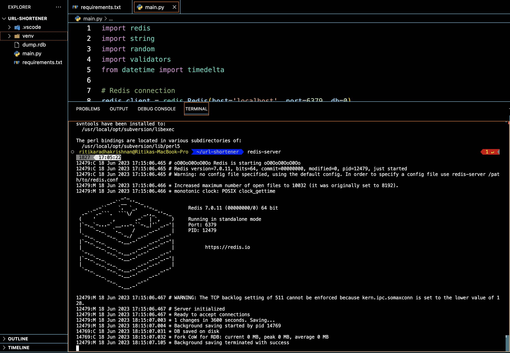

Good 'ol Redis.
Why did the developer break up with Redis? Because they needed more "cache" in their relationship!
Introduction
Redis (Remote Dictionary Server) is an in-memory multi-model datacase, based on the idea that a cache can also be a durable data store.
Huge applications require data to be delivered with sub-milisecond latency, Relational databases are not fast enough to handle such applications.
In Redis, read/write on the data is done from the main computer memory as opposed to much slower disk. However, it’s data is stored ON the disk so that reconstruction any time.
Every data point is stored as key and the corresponding value can be an integer, string, hash map, hash set, list, stream, bitmap and so on, This helps to store the data naturally (as we do in a regular data structure) as opposed to forcing the data into relational tables or JSON.
📌 Create a key with a string value:
SET myKey myValue
📌 Read a key :
GET myKey
Redis modules such as Redis Graph, Redis JSON, etc make it powerful enough to act as a primary database instead of using it as a cache to help relationship database.
URL shortener using Redis
Let’s create a basic URL shortener using Redis to store the mappings between the shortened URLs and the original URLs.
Redis allows us to store the shortened ID as the key and the original URL as the value, allowing us to perform lookups and retrieval in constant time complexity.
Functionalities of URL shortener not only include efficient storage of key-value pairs but also the ability to set an expiration time for keys. In the URL shortener project, Redis can be used to automatically remove expired mappings from the data store. This feature ensures that the shortened URLs have a limited lifespan and can be cleaned up automatically after a specified period.
Redis can be used to track the number of clicks on each shortened URL by incrementing a value associated with the shortened ID.
File Structure :
url_shortener/
├── main.py
├── requirements.txt
Requirements :
Requirements.txt dependencies required for the project and main.py will provide the source code for the URL shortener application. ‘requirements.txt’ contains the following lines.
redis
validators
Later, install of dependencies can be done by running pip install -r requirements.txt
Source Code :
import redis
import string
import random
import validators
from datetime import timedelta
# Redis connection
redis_client = redis.Redis(host='localhost', port=6379, db=0)
# Constants
SHORT_ID_LENGTH = 6
EXPIRATION_DAYS = 30
# Function to generate a random short ID
def generate_short_id():
characters = string.ascii_letters + string.digits
return ''.join(random.choice(characters) for _ in range(SHORT_ID_LENGTH))
# Function to shorten a URL
def shorten_url(original_url):
# Validate the URL
if not validators.url(original_url):
return None
# Generate a unique identifier for the shortened URL
shortened_id = generate_short_id()
# Store the mapping between the shortened URL and the original URL in Redis
redis_client.set(shortened_id, original_url)
# Set an expiration for the shortened URL
redis_client.expire(shortened_id, timedelta(days=EXPIRATION_DAYS))
# Return the shortened URL
return f"yourdomain.com/{shortened_id}"
# Function to expand a shortened URL
def expand_url(shortened_id):
# Retrieve the original URL from Redis using the shortened ID
original_url = redis_client.get(shortened_id)
# Increment the click count for the shortened URL
click_count_key = f"click_count:{shortened_id}"
redis_client.incr(click_count_key)
# Return the original URL if found, otherwise return None
return original_url.decode() if original_url else None
# Function to get the click count for a shortened URL
def get_click_count(shortened_id):
click_count_key = f"click_count:{shortened_id}"
click_count = redis_client.get(click_count_key)
return int(click_count) if click_count else 0
# Shorten a URL
original_url = "https://www.brandextract.com/Insights/Resources-Presentations/The-Story-Behind-the-Longest-URL-in-the-World/"
shortened_url = shorten_url(original_url)
print("Shortened URL:", shortened_url)
# Expand a shortened URL
expanded_url = expand_url(shortened_url.split('/')[-1])
print("Expanded URL:", expanded_url)
# Get click count for a shortened URL
click_count = get_click_count(shortened_url.split('/')[-1])
print("Click Count:", click_count)
Understanding the code:
1. Importing Python Modules: redis module provides the Redis client to connect and interact with Redis.
2. Redis Connection: redis_client creates a Reds client object to connect to the Redis server running on localhost at port 6379 and using db=0.
3. Representation of variables: SHORT_ID_LENGTH constant represents the length of the randomly generated short ID for the shortened URL and EXPIRATION_DAYS constant represents the number of days after which the shortened URL should expire.
4. Function to Generate a Random Short ID: generate_short_id() function generates a random short ID for the shortened URL, the function randomly selects characters from the pool and concatenates them to form the short ID of length SHORT_ID_LENGTH.
5. Function to Shorten a URL: shorten_ur(original_url) function takes an original URL as input. Using the validators.ur() function, if the URL is not valid, it returns None. It generates a unique shortened ID using the generate_short_id() function. The mapping between the shortened ID and the original URL is stored in Reds using redis_client.set(shortened_id, original_url).
6. Expiration: is set for the shortened URL using redis_client.expire(shortened_id, timedelta(days=EXPIRATION_DAYS))
7. Finally, it returns the shortened URL in the format "yourdomain.com/shortened _id".
8. Function to Expand a Shortened URL: expand_url (shortened_id) function takes a shortened ID as input. It retrieves the original URL from Redis using redis_client.get (shortened_id).
9. If the original URL is found, it increments the click count for the shortened URL using redis_client. incr(click_count_key) as "click_count:shortened_id".
10. Function to Get Click Count for a Shortened URL: get_click_count (shortened_id function takes a shortened ID as input and retrieves the click count from Redis using redis_client.get(click_count_key).
Testing:
It shortens the original URL by calling shorten_ur(original_url) and stores the result in shortened _url.
It expands the shortened URL by calling expand_url(shortened_url.split('/')[-1]) , where shortened_url.split('/')[-1] extracts the shortened ID from the URL.
The expanded URL is stored in expanded _url.
It retrieves the click count for the shortened URL by calling get_click_count (shortened_url.split('/')[-1]) and stores the result in click_count
Making a connection with the Redis server and testing the application
To isolate the project's dependencies we will set up a virtual environment In the terminal, navigate to the url_shortener directory and create a virtual environment by running:
python -m venv venv
To activate the environment use:
source venv/bin/activate
Installing the dependencies:
pip install -r requirements.txt
Running the url shortener application:
python main.py
Redis Server Running:
Watch this video about Redis and why it's so efficient.